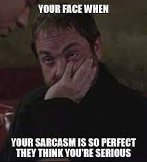

Memes are also a part of sarcasm(in my opinion).I think so because meme are just as funny as a person therefore when you put them together it is the best.But what does suck sometimes is when a meme is overused or not funny and people still post or talk about it is even more lame.
 image from google